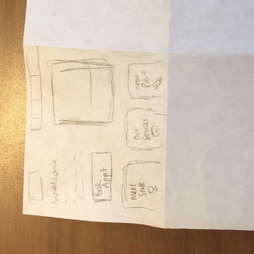
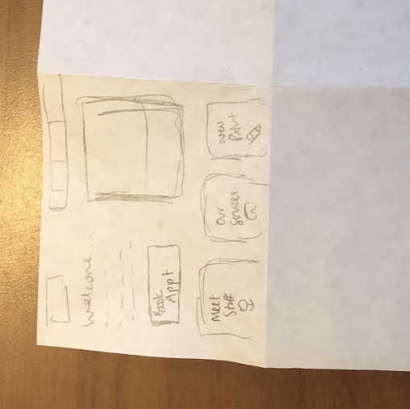

Usability Problems

I chose this website because it is an important tool for people who are looking for a dentistry or who are looking to find out more information from their current dentistry. However, this site looks outdated which will discourage some users from looking further into this dentistry. In addition, the site doesn’t respond well to page changes and doesn’t have a mobile view which alienates many users from being able to use it. Finally, this site does not take up much space on the page, and has small text, which makes it hard to read and engage with.
https://www.goodteeth.com/Sketches
To prepare to redesign this website, I first did an activity called speed sketching where I divided a sheet of paper into 9 squares and over the course of 9 minutes, I created 9 possible redesigns. This process allowed me to brainstorm without worrying about if each design is fleshed-out enough; rather, I was able to play with different formats and ideas and see what I liked for when putting together my final sketch and wireframe.
Speed Sketches
 

Final Sketch

Low-Fidelity Prototyping
Next, I created a low-fidelity wireframe, one for desktop, one for tablet, and one for mobile. In addition, I annotated each wireframe to specify why I made each change or why I kept things the same as the original site.


Style Guide
After creating low-fidelity wireframes, I began to put together a style guide for the website redesign. I knew that I wanted to give the website a similar feel to the original site, so to do this, I took into account the logo colors and website colors while also making new choises for font, icons, and colors. I learned a lot through this process figuring out what works in the final code, especially learning how accessible certain colors are.
- I used the dark blue from the logo as part of my color palette then used a color palette generator to put together a light shade of blue and a medium shade of blue.
- For the fonts, I chose Lato and Gothic A1 for their simplicity and readability.
- I used Font Awesome for my icon library, which allowed me to find icons that fit the function of each of the buttons they are used for.
- Initially, I had chosen a lighter blue for the main blue color of this redesign, but through testing with WEBAIM, I learned that there was not enough contrast, so I changed the style guide to reflect a deeper shade of blue that allows for better contrast when white text is on it.

High-Fidelity Mockup